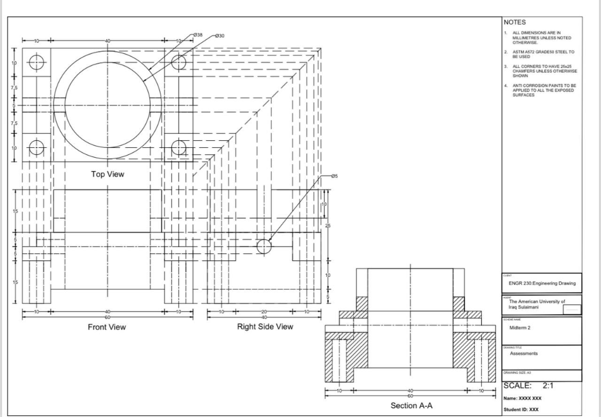

The Standard
A technically correct 3D model is necessary but not sufficient for manufacturing. The drawing is the manufacturing contract: it defines not just geometry but intent — which surfaces must be flat, which features must be coaxial, what tolerances a machinist must hold. This drawing was produced to meet the documentation standard a part would need to go to a job shop.
Deliverables
Section views for internal geometry
Internal features that standard orthographic projections obscure were documented with full section views — cutting planes placed to reveal bore geometry, thread depth, and wall thicknesses without ambiguity.
GD&T callouts
Geometric Dimensioning and Tolerancing annotations specify form, orientation, and location tolerances on critical features — defining what the machinist is responsible for holding, not just nominal dimensions.
Scale 2:1 detail drawing
Small features were drawn at double scale to allow dimension annotations to remain legible and unambiguous at print size — following ISO drawing standard for magnified detail views with explicit scale callout.
Drawing
